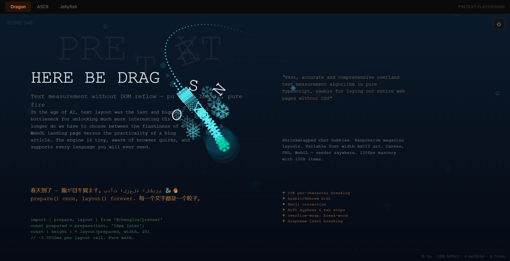

Project 1
🐉 Pretext Playground Upgrade
Every character on screen is a physics body.
Three interactive demos: an ASCII dragon with fire/ice breath, a bioluminescent jellyfish abyss, and five animated ASCII art scenes. Structure-of-Arrays, zero GC in the game loop.